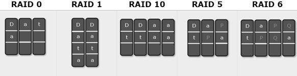
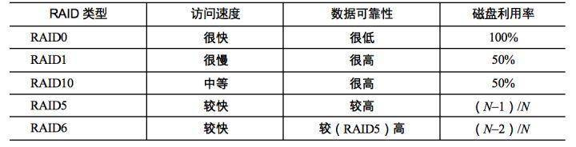
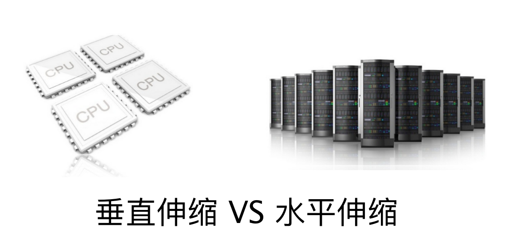

- 00 开篇词 为什么说每个软件工程师都应该懂大数据技术？.md.html
- 01 大数据技术发展史：大数据的前世今生.md.html
- 02 大数据应用发展史：从搜索引擎到人工智能.md.html
- 03 大数据应用领域：数据驱动一切.md.html
- 04 移动计算比移动数据更划算.md.html
- 05 从RAID看垂直伸缩到水平伸缩的演化.md.html
- 06 新技术层出不穷，HDFS依然是存储的王者.md.html
- 07 为什么说MapReduce既是编程模型又是计算框架？.md.html
- 08 MapReduce如何让数据完成一次旅行？.md.html
- 09 为什么我们管Yarn叫作资源调度框架？.md.html
- 10 模块答疑：我们能从Hadoop学到什么？.md.html
- 11 Hive是如何让MapReduce实现SQL操作的？.md.html
- 12 我们并没有觉得MapReduce速度慢，直到Spark出现.md.html
- 13 同样的本质，为何Spark可以更高效？.md.html
- 14 BigTable的开源实现：HBase.md.html
- 15 流式计算的代表：Storm、Flink、Spark Streaming.md.html
- 16 ZooKeeper是如何保证数据一致性的？.md.html
- 17 模块答疑：这么多技术，到底都能用在什么场景里？.md.html
- 18 如何自己开发一个大数据SQL引擎？.md.html
- 19 Spark的性能优化案例分析（上）.md.html
- 20 Spark的性能优化案例分析（下）.md.html
- 21 从阿里内部产品看海量数据处理系统的设计（上）：Doris的立项.md.html
- 22 从阿里内部产品看海量数据处理系统的设计（下）：架构与创新.md.html
- 23 大数据基准测试可以带来什么好处？.md.html
- 24 从大数据性能测试工具Dew看如何快速开发大数据系统.md.html
- 25 模块答疑：我能从大厂的大数据开发实践中学到什么？.md.html
- 26 互联网产品 + 大数据产品 = 大数据平台.md.html
- 27 大数据从哪里来？.md.html
- 28 知名大厂如何搭建大数据平台？.md.html
- 29 盘点可供中小企业参考的商业大数据平台.md.html
- 30 当大数据遇上物联网.md.html
- 31 模块答疑：为什么大数据平台至关重要？.md.html
- 32 互联网运营数据指标与可视化监控.md.html
- 33 一个电商网站订单下降的数据分析案例.md.html
- 34 A_B测试与灰度发布必知必会.md.html
- 35 如何利用大数据成为“增长黑客”？.md.html
- 36 模块答疑：为什么说数据驱动运营？.md.html
- 37 如何对数据进行分类和预测？.md.html
- 38 如何发掘数据之间的关系？.md.html
- 39 如何预测用户的喜好？.md.html
- 40 机器学习的数学原理是什么？.md.html
- 41 从感知机到神经网络算法.md.html
- 42 模块答疑：软件工程师如何进入人工智能领域？.md.html
- 所有的不确定都是机会——智慧写给你的新年寄语.md.html
- 第2季回归丨大数据之后，让我们回归后端.md.html
- 结束语 未来的你，有无限可能.md.html
- 捐赠
05 从RAID看垂直伸缩到水平伸缩的演化
经过前面的预习和上一期我们聊的，大数据技术主要是要解决大规模数据的计算处理问题，但是我们要想对数据进行计算，首先要解决的其实是大规模数据的存储问题。我这里有一个直观又现实的问题想问你：如果一个文件的大小超过了一张磁盘的大小，你该如何存储？
我的答案是，单机时代，主要的解决方案是RAID；分布式时代，主要解决方案是分布式文件系统。
其实不论是在单机时代还是分布式时代，大规模数据存储都需要解决几个核心问题，这些问题都是什么呢？总结一下，主要有以下三个方面。
1.数据存储容量的问题。既然大数据要解决的是数以PB计的数据计算问题，而一般的服务器磁盘容量通常1～2TB，那么如何存储这么大规模的数据呢？
2.数据读写速度的问题。一般磁盘的连续读写速度为几十MB，以这样的速度，几十PB的数据恐怕要读写到天荒地老。
3.数据可靠性的问题。磁盘大约是计算机设备中最易损坏的硬件了，通常情况一块磁盘使用寿命大概是一年，如果磁盘损坏了，数据怎么办？
在大数据技术出现之前，我们就需要面对这些关于存储的问题，对应的解决方案就是RAID技术。今天我们就先从RAID开始，一起看看大规模数据存储方式的演化过程。
RAID（独立磁盘冗余阵列）技术是将多块普通磁盘组成一个阵列，共同对外提供服务。主要是为了改善磁盘的存储容量、读写速度，增强磁盘的可用性和容错能力。在RAID之前，要使用大容量、高可用、高速访问的存储系统需要专门的存储设备，这类设备价格要比RAID的几块普通磁盘贵几十倍。RAID刚出来的时候给我们的感觉像是一种黑科技，但其原理却不复杂，下面我慢慢道来。
目前服务器级别的计算机都支持插入多块磁盘（8块或者更多），通过使用RAID技术，实现数据在多块磁盘上的并发读写和数据备份。
常用RAID技术有图中下面这几种，光看图片你可能觉得它们都差不多，下面我给你讲讲它们之间的区别。

首先，我们先假设服务器有N块磁盘，RAID 0是数据在从内存缓冲区写入磁盘时，根据磁盘数量将数据分成N份，这些数据同时并发写入N块磁盘，使得数据整体写入速度是一块磁盘的N倍；读取的时候也一样，因此RAID 0具有极快的数据读写速度。但是RAID 0不做数据备份，N块磁盘中只要有一块损坏，数据完整性就被破坏，其他磁盘的数据也都无法使用了。
RAID 1是数据在写入磁盘时，将一份数据同时写入两块磁盘，这样任何一块磁盘损坏都不会导致数据丢失，插入一块新磁盘就可以通过复制数据的方式自动修复，具有极高的可靠性。
结合RAID 0和RAID 1两种方案构成了RAID 10，它是将所有磁盘N平均分成两份，数据同时在两份磁盘写入，相当于RAID 1；但是平分成两份，在每一份磁盘（也就是N/2块磁盘）里面，利用RAID 0技术并发读写，这样既提高可靠性又改善性能。不过RAID 10的磁盘利用率较低，有一半的磁盘用来写备份数据。
一般情况下，一台服务器上很少出现同时损坏两块磁盘的情况，在只损坏一块磁盘的情况下，如果能利用其他磁盘的数据恢复损坏磁盘的数据，这样在保证可靠性和性能的同时，磁盘利用率也得到大幅提升。
顺着这个思路，RAID 3可以在数据写入磁盘的时候，将数据分成N-1份，并发写入N-1块磁盘，并在第N块磁盘记录校验数据，这样任何一块磁盘损坏（包括校验数据磁盘），都可以利用其他N-1块磁盘的数据修复。
但是在数据修改较多的场景中，任何磁盘数据的修改，都会导致第N块磁盘重写校验数据。频繁写入的后果是第N块磁盘比其他磁盘更容易损坏，需要频繁更换，所以RAID 3很少在实践中使用，因此在上面图中也就没有单独列出。
相比RAID 3，RAID 5是使用更多的方案。RAID 5和RAID 3很相似，但是校验数据不是写入第N块磁盘，而是螺旋式地写入所有磁盘中。这样校验数据的修改也被平均到所有磁盘上，避免RAID 3频繁写坏一块磁盘的情况。
如果数据需要很高的可靠性，在出现同时损坏两块磁盘的情况下（或者运维管理水平比较落后，坏了一块磁盘但是迟迟没有更换，导致又坏了一块磁盘），仍然需要修复数据，这时候可以使用RAID 6。
RAID 6和RAID 5类似，但是数据只写入N-2块磁盘，并螺旋式地在两块磁盘中写入校验信息（使用不同算法生成）。
从下面表格中你可以看到在相同磁盘数目（N）的情况下，各种RAID技术的比较。

RAID技术有硬件实现，比如专用的RAID卡或者主板直接支持；也可以通过软件实现，在操作系统层面将多块磁盘组成RAID，从逻辑上视作一个访问目录。RAID技术在传统关系数据库及文件系统中应用比较广泛，是改善计算机存储特性的重要手段。
现在我来总结一下，看看RAID是如何解决我一开始提出的，关于存储的三个关键问题。
1.数据存储容量的问题。RAID使用了N块磁盘构成一个存储阵列，如果使用RAID 5，数据就可以存储在N-1块磁盘上，这样将存储空间扩大了N-1倍。
2.数据读写速度的问题。RAID根据可以使用的磁盘数量，将待写入的数据分成多片，并发同时向多块磁盘进行写入，显然写入的速度可以得到明显提高；同理，读取速度也可以得到明显提高。不过，需要注意的是，由于传统机械磁盘的访问延迟主要来自于寻址时间，数据真正进行读写的时间可能只占据整个数据访问时间的一小部分，所以数据分片后对N块磁盘进行并发读写操作并不能将访问速度提高N倍。
3.数据可靠性的问题。使用RAID 10、RAID 5或者RAID 6方案的时候，由于数据有冗余存储，或者存储校验信息，所以当某块磁盘损坏的时候，可以通过其他磁盘上的数据和校验数据将丢失磁盘上的数据还原。
我们对更强计算能力和更大规模数据存储的追求几乎是没有止境的，这似乎是源于人类的天性。神话里人类试图建立一座通天塔到神居住的地方，就是这种追求的体现。
我在上一期提到过，在计算机领域，实现更强的计算能力和更大规模的数据存储有两种思路，一种是升级计算机，一种是用分布式系统。前一种也被称作“垂直伸缩”（scaling up），通过升级CPU、内存、磁盘等将一台计算机变得更强大；后一种是“水平伸缩”（scaling out），添加更多的计算机到系统中，从而实现更强大的计算能力。

在计算机发展的早期，我们获得更强大计算能力的手段主要依靠垂直伸缩。一方面拜摩尔定律所赐，每18个月计算机的处理能力提升一倍；另一方面由于不断研究新的计算机体系结构，小型机、中型机、大型机、超级计算机，不断刷新我们的认知。
但是到了互联网时代，这种垂直伸缩的路子走不通了，一方面是成本问题，互联网公司面对巨大的不确定性市场，无法为一个潜在的需要巨大计算资源的产品一下投入很多钱去购买大型计算机；另一方面，对于Google这样的公司和产品而言，即使是世界上最强大的超级计算机也无法满足其对计算资源的需求。
所以互联网公司走向了一条新的道路：水平伸缩，在一个系统中不断添加计算机，以满足不断增长的用户和数据对计算资源的需求。这就是最近十几年引导技术潮流的分布式与大数据技术。
RAID可以看作是一种垂直伸缩，一台计算机集成更多的磁盘实现数据更大规模、更安全可靠的存储以及更快的访问速度。而HDFS则是水平伸缩，通过添加更多的服务器实现数据更大、更快、更安全存储与访问。
RAID技术只是在单台服务器的多块磁盘上组成阵列，大数据需要更大规模的存储空间和更快的访问速度。将RAID思想原理应用到分布式服务器集群上，就形成了Hadoop分布式文件系统HDFS的架构思想。
垂直伸缩总有尽头，水平伸缩理论上是没有止境的，在实践中，数万台服务器的HDFS集群已经出现，我会在下一期谈谈HDFS的架构。
思考题
传统机械磁盘进行数据连续写入的时候，比如磁盘以日志格式连续写入操作，其写入速度远远大于磁盘随机写入的速度，比如关系数据库连续更新若干条数据记录，你知道这是为什么吗？
欢迎你写下自己的思考或疑问，与我和其他同学一起讨论。
© 2019 - 2023 Liangliang Lee. Powered by gin and hexo-theme-book.